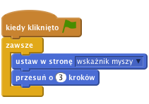
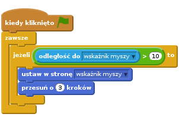
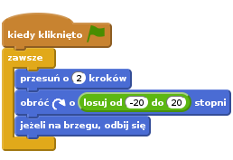
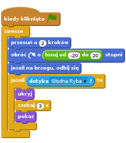
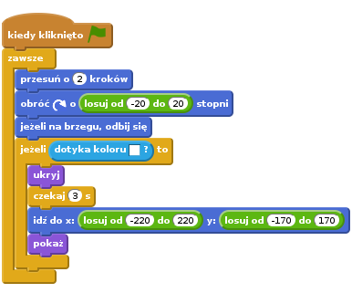

Wstęp
Zrobimy grę w karmienie ryb! Będziesz kierować dużą głodną rybą pływającą po morzu w taki sposób, aby udało jej się zjeść wszystkie rozgwiazdy.

Krok 1: Stwórz duszka, który goni kursor myszki
Dodajmy rybę, która pływa po morzu!
Zadania do wykonania
- Zacznij nowy projekt w Scratchu.
- Zaznacz Scenę, a następnie przejdź do karty z ustawieniami tła. Zaimportuj tło underwater3 z katalogu Natura. Usuń tło backdrop1.
- Zmień nazwę duszka z Sprite1 na "Głodna Ryba" klikając na niebieską ikonkę i.
- Zaimportuj kostium Głodnej Ryby wybierając z katalogu Zasoby plik ryba-paszcza-otwarta.png*, a następnie usuń istniejący costume1 i costume2.
- Kliknij ponownie na niebieską ikonkę i i upewnij się, że duszek może obracać się tylko w prawo i lewo.
- Dodaj skrypt, który każe rybie pływać w kierunku kursora myszki:

Przetestuj swój projekt
Wciśnij zieloną flagę.
Poruszaj kursorem myszy po morzu. Czy ryba pływa za nim?
Co się dzieje, jeżeli nie ruszasz kursorem i ryba go złapie? Jak to wygląda? Dlaczego tak się dzieje?
Zadania do wykonania
- Możesz zapobiec takiemu motaniu się ryby, jeżeli każesz jej ruszać się tylko wtedy, kiedy nie jest za blisko kursora (w sekcji
Czujnikiznajdziesz blokodległość do).

Przetestuj swój projekt
Zapisz swój projekt.
Rzeczy do spróbowania
Jeżeli chcesz, możesz zmienić liczby w skrypcie. W jaki sposób zmienia to sposób poruszania się Głodnej Ryby? Zmień odległość na jakiąś dużą liczbę (np. 100) albo jakąś bardzo małą (np. 1). Zmień ilość kroków na coś dużego (np. 20) lub małego (np. 1 lub nawet 0). Co się dzieje?
Krok 2: Dodaj rozgwiazdę
Zadania do wykonania
- Stwórz nowego duszka korzystając z kostiumu Zwierzęta/Starfish.
- Zmniejsz nowego duszka (narzędzie do zmniejszania znajduje się nad Sceną).
- Dodaj skrypt, który kieruje pływającą rozgwiazdą. Chcemy, aby ruszała się losowo, więc byłoby dobrze, aby najpierw ruszała się trochę do przodu, a potem skręciła albo w lewo, albo w prawo, a potem zaczęła się ruszać od nowa.

Przetestuj swój projekt
Wciśnij zieloną flagę i popatrz, jak rozgwiazda porusza się po ekranie. Czy pływa tak jak trzeba? Czy wygląda to realistycznie?
Teraz ryba i rozgwiazda nie interesują się sobą. Zajmiemy się tym w następnym kroku.
Zapisz swój projekt
Rzeczy do spróbowania
- Zmień liczby w bloku
losuj od .. do ...oraz odległość, o jaką porusza się rozgwiazda. W jaki sposób te zmiany wpływają na sposób poruszania się? - Co robi blok
jeżeli na brzegu, odbij się? Usuń go i zobacz co się stanie.
Krok 3: Głodna ryba łapie rozgwiazdę
Chcemy, aby ryba zjadła rozgwiazdę! Jak tylko ryba złapie żyjątko, muszą stać się dwie rzeczy:
- Ryba musi zamknąć paszczę z głośnym "mlask!"
- rozgwiazda musi zniknąć i pojawić się chwilę później gdzie indziej
Zadania do wykonania
- Na początek sprawmy, aby rozgwiazda znikała po dotknięciu ryby i po 3 sekundach pojawiała się gdzie indziej. Użyjemy bloku
dotyka, aby sprawdzić, czy rozgwiazda jest w kontakcie z rybą.

Przetestuj swój projekt
Spróbuj złapać rozgwiazdę – czy widzisz jakieś problemy? Zauważ, że rozgwiazda znika bez względu na to, z której strony dotknie rybę. Poza tym, jeżeli ryba się nie rusza, to po 3 sekundach może od razu zjeść rozgwiazdę – to jest trochę niefajne!
Zadania do wykonania
- Co możemy zrobić, aby upewnić się, że rozgwiazda znika tylko wtedy, gdy ryba dotknie jej paszczą? Możemy skorzystać z czujnika
dotyka kolorui sprawdzać, czy rozgwiazda dotyka niebieskich zębów ryby! Aby to zrobić, zamień blokdotykanadotyka koloru, kliknij kwadracik z kolorem, a gdy kursor myszy się zmieni, kliknij na zębach ryby. Następnie możemy sprawić, aby rozgwiazda przesuwała się w losowe miejsce na ekranie przed ponownym pojawieniem. Możemy użyć do tego bloku
idź doi użyć losowych wartości dla x i y.
Przetestuj swój projekt
Spróbuj złapać rozgwiazdę jeszcze raz – czy znika ona tylko wtedy, kiedy dotknie zębów ryby? I czy pojawia się w losowym miejscu na ekranie zamiast od razu tam, gdzie została zjedzona?
Zadania do wykonania
Ryba musi wiedzieć, kiedy zjadła rozgwiazdę, aby mogła wydać dźwięk i zmienić kostium. Aby to zrobić, musimy najpierw
nadaćsygnał, że rozgwiazda została zjedzona.![kiedy kliknięto zieloną flagę
zawsze
przesuń o (2) kroków
obróć @ o (losuj od (-20) do (20)) stopni
jeżeli na brzegu, odbij się
jeżeli <dotyka koloru [#FFFFFF]?> to
nadaj [masz mnie v]
ukryj
czekaj (3) s
idź do x:(losuj od (-220) do (220)) y:(losuj od (-170) do (170))
pokaż](615ff2fb5a9e26de30f8fc01d3f75aed5d0721c9.png)
Teraz chcemy, aby ryba odpowiedziała na to głośnym zamknięciem paszczy.
Zadania do wykonania
- Dodaj Głodnej Rybie drugi kostium importując go z pliku Zasoby/ryba-paszcza-zamknieta.png". Dodaj też dźwięk z pliku Zasoby/siorbanie.mp3**.
Następnie dodaj skrypt do Głodnej Ryby, który odpowiada na wiadomość nadaną przez rozgwiazdę. Skrypt powinien zagrać odgłos siorbania i
zamienić kostiumryby na ten z zamkniętą paszczą, a następnie poczekać chwilę i wrócić do pierwszego kostiumu.![kiedy otrzymam [masz mnie v]
zagraj dźwięk [siorbanie v]
powtórz (2) razy
zmień kostium na [ryba-paszcza-zamknieta v]
czekaj (0.5) s
zmień kostium na [ryba-paszcza-otwarta v]](f9d007fbb49187b28c77a7f5311fa249ea8d1086.png)
Skoro nasza Głodna Ryba jest gotowa jeść, wypełnijmy ocean jedzeniem. Kliknij na rozgwieździe prawym przyciskiem myszy i zduplikuj ją kilka razy.
Przetestuj swój projekt
Kliknij zieloną flagę.
Czy Głodna Ryba zjada swoje ofiary? Czy potrafi zjeść każdą rozgwiazdę?
Zapisz swój projekt.
Rzeczy do przemyślenia
Dlaczego musimy dodać blok pokaż na początku skryptu każdej rozgwiazdy? Pomyśl, co by się stało, gdyby gra została zatrzymana zanim zjedzona rozgwiazda ponownie pojawi się na ekranie. Co by się stało po uruchomieniu gry?
Brawo! Udało Ci się skończyć podstawową wersję gry. Jest jeszcze kilka rzeczy, które możesz zmienić w grze. Pora na wyzwania!
Wyzwanie 1: Spraw, aby rozgwiazdy poruszały się inaczej
Póki co wszystkie rozgwiazdy poruszają się tak samo.
Spróbuj zmienić sposób w jaki porusza się jedna z rozgwiazd.
Podpowiedź: Postaraj się nie spędzić na tym zadaniu zbyt dużo czasu. Warto również spojrzeć na inne wyzwania!
Wybierz jedną rozgwiazdę, nad którą będziesz pracować.
Jeżeli ma ona ten sam kostium co inne, zmień jego kolor używając bloku ustaw efekt kolor na. W ten sposób będziesz łatwo widzieć, nad którą rozgwiazdą pracujesz.
Spraw, aby ta rozgwiazda poruszała się wolniej od innych.
Podpowiedź: Spójrz na blok przesuń o 2 kroków.
Przetestuj swój projekt
Czy rozgwiazda porusza się wolniej? Czy gra jest teraz lepsza?
Jeżeli udało ci się to zrobić, wybierz inną rozgwiazdę i spraw, aby poruszała się szybciej od innych.
Czy rozgwiazdy poruszają się naturalnie? Czy gra jest jeszcze lepsza po tych zmianach?
Podpowiedź: Jeżeli rozgwiazdy pływają w kółko, zmień wartości z bloku losuj od ... do ....
A może spróbujesz zmienić zachowanie rozgwiazd, tak aby każda poruszała się inaczej? Wykorzystaj wprowadzone poprzednio zmiany.
Czy te zmiany sprawiły, że gra jest jeszcze lepsza? Czy gra podoba ci się bardziej, jest trudniejsza czy łatwiejsza? Może któraś konkretna zmiana podoba ci się najbardziej?
Zapisz swój projekt
Wyzwanie 2: Spraw, aby rozgwiazdy unikały głodnej ryby.
rozgwiazdy w tej grze nie zachowują się zbyt mądrze: po prostu pływają w kółko i dają się zjeść rybie. Prawdziwa rozgwiazda na pewno próbowała by uciec od drapieżnika!
Spróbujmy sprawić, aby jedna z rozgwiazd uciekała przed Głodną Rybą
W Scratchu nie ma bloku, który powiedziałby ci, w którym kierunku porusza się inny duszek. Ale możesz sprawić, aby duszek zwrócił się w kierunku innego duszka, a potem odwrócił się od niego plecami. Bloki, których będziesz potrzebować, znajdują się w palecie Ruch.
Wykorzystując ten pomysł, spraw, aby jedna z rozgwiazd zawsze była odwrócona do Głodnej Ryby plecami. Może spróbujesz sprawić, aby się trzęsła jak będzie uciekać?
Przetestuj swój projekt
Czy teraz trudniej jest złapać rozgwiazdę? Czy gra jest teraz lepsza?
Zapisz swój projekt
Wyzwanie 3: Dodaj punkty
Ale zjadanie rozgwiazd to nie wszystko. Skąd będziesz wiedzieć, czy umiesz grać w tę grę lepiej niż inni gracze?
Potrzebujesz w jakiś sposób liczyć ile rozgwiazd udało Ci się zjeść. Już robiliśmy coś podobnego wcześniej.
Gdzie należy dodać blok, który będzie zmieniał liczbę punktów?
Upewnij się, żeby punkty przestawiały się na zero przy rozpoczęciu nowej gry. Gdzie trzeba dodać ten blok?
Przetestuj swój projekt
Czy jak zaczynasz nową grę, to liczba punktów jest równa zero? Czy dostajesz punkt za każdą zjedzoną rozgwiazdę?
Zapisz swój projekt.
Wyzwanie 4: Dodaj zegar
Ograniczmy czas, w którym możesz zjadać rozgwiazdy. Jak wiele rozgwiazd uda ci się zjeść w ciągu 30 sekund?
Jeżeli nie masz pomysłu, jak to zrobić, spróbuj przypomnieć sobie, jak to robiliśmy wcześniej. Na początek niech gra trwa 30 sekund.
Przetestuj swój projekt
Czy kiedy zaczynasz grę, zegar wskazuje 30?
Czy zegar poprawnie odlicza czas?
Czy udaje Ci się zjeść jakieś rozgwiazdy w tym czasie?
Czy gra się zatrzymuje po upływie czasu?
Zapisz swój projekt.
Wyzwanie 5: Zdobądź dodatkowe punkty
Zdobywaj dodatkowe punkty, jeżeli uda Ci się zjeść 3 rozgwiazdy na raz! W jaki sposób możesz sprawdzić, ile rozgwiazd udało Ci się zjeść?
Podpowiedź: Jeden ze sposobów, w jaki możesz to zrobić, to użyć zmiennej, która policzy jak wiele rozgwiazd pływa wokoło ryby.
Zapisz swój projekt.
Wyzwanie 6: Zmień cel gry: rozgwiazda musi przeżyć!
Czasami super pomysły przychodzą do głowy, jeżeli spróbujesz zrobić coś na odwrót.
Zmień grę w ten sposób, żeby zamiast sterować Głodną Rybą, która próbuje zjeść rozgwiazdy, sterowało się rozgwiazdą otoczoną wieloma Głodnymi Rybami. Jak długo uda jej się przetrwać, zanim zostanie zjedzona?
Zapisz swój projekt.
Brawo! To by było na tyle, teraz możesz się cieszyć swoją grą!
Nie zapomnij, że możesz podzielić się swoją grą ze swoimi przyjaciółmi i rodziną. Żeby to zrobić, kliknij menu Udostępnij.